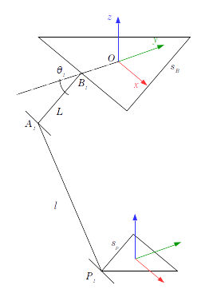
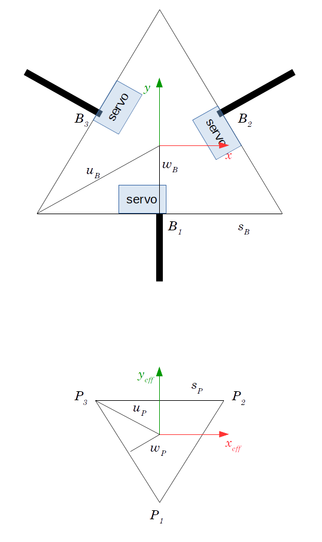

Equacions cinemàtiques del robot Delta
Basat en "The Delta parallel robot: Kinematics Solutions" de Robert L. Williams II
| --> |
kill(all)$ simp:true$ |
Figure 1:/home/txema/Documents/IntegrationProject/Personal/wxMax/Diagrama gobal.png

Figure 2:/home/txema/Documents/IntegrationProject/Personal/wxMax/Diagrama bases.png

Primer pas, es defineixen els punts coneguts. Aquests són B i P. Per fer-ho fàcil es tenen en consideració 2 coses. La primera és que en comptes de representar P en funció dels angles theta, el que es fa és partir des del final. En aquest cas, com es vol resoldre el problema "invers", es considera que x, y, z de l'end effector són coneguts. La segona consideració són les equacions següents:
| --> |
wB = s_B*sqrt(3)/6; uB = s_B*sqrt(3)/3; wP = s_P*sqrt(3)/6; uP = s_P*sqrt(3)/3; |
Fet això es defineixen els punts B i P, tenint en compte les definicions anteriors:
| --> |
B1:[0,-w_B,0]; B2:[w_B*sqrt(3)/2,1/2*w_B,0]; B3:[-w_B*sqrt(3)/2,1/2*w_B,0]; P1:[x,y-u_P,z]; P2:[x+s_P/2,y+w_P,z]; P3:[x-s_P/2,y+w_P,z]; |
Ara ve el pas clau. Primer cal no perdre de vista l'objectiu principal del que s'està buscant, que és relacionar en una equació les thetas i les coordenades de l'end-effector {x,y,z}. Per fer-ho, l'autor de l'article proposa el següent:
- Amb les dades que es tenen, es pot arribar a trobar les coordenades del punt A. Simplement és la suma de dos vectors: OB+BA. Com la theta és una de les variables que s'estan buscant, es pot fer servir en l'equació. El que no es pot fer és anar més enllà, perquè els angles que formen L i l no són coneguts i dependran de la posició de l'End-Effector. Dit d'una altra manera, no hi ha forma d'imposar els angles entre L i l, perqué no hi ha actuadors.
- Per altra banda, es pot conèixer fàcilment les coordenades dels punts P. De fet ja estan calculades més amunt. {x,y,z} són desconeguts, però ja va bé que apareguin en l'equació, perquè justament el que es vol és relacionar les coordenades {x,y,z} amb {theta1, theta2, theta3}.
Ara ve la idea feliç, per relacionar els 2 punts anteriors el que proposa l'article és el següent:
- l és una distància coneguda, per tant, si es troba el vector que va des de A fins a P i es busca el seu mòdul, automàticament es té l. Aplicant la fórmula d'extrem menys origen per calcular el vector l i obtenint el seu mòdul, apareixen les equacions del robot Delta.
Càlcul de OA=OB+BA
| --> |
A1:B1+[0,-L*cos(theta_1),-L*sin(theta_1)]; A2:B2+[sqrt(3)*L*cos(theta_2)/2,L*cos(theta_2)/2,-L*sin(theta_2)]; A3:B3+[-sqrt(3)*L*cos(theta_3)/2,L*cos(theta_3)/2,-L*sin(theta_3)]; |
Càlcul del vector l=P-OA. S'incorpora un petit canvi de variable per facilitar els càlculs:
a=w_B-u_P
b=-sqrt(3)/2*w_B+s_P/2
c=-w_B/2+w_P
Aquests canvis de variable es fan amb la funció ratsubst de manera que ratsubst(a,w_B-u_P,P1-A1) vol dir que busqui en P1-A1 la seqüència w_B-u_P i hi posi una a
| --> |
vectl1:ratsubst(a,w_B-u_P,P1-A1); vectl2:ratsubst(b,-sqrt(3)/2*w_B+s_P/2,expand(P2-A2))$ vectl2:ratsubst(c,-w_B/2+w_P,expand(vectl2)); vectl3:ratsubst(b,-sqrt(3)/2*w_B+s_P/2,expand(P3-A3))$ vectl3:ratsubst(c,-w_B/2+w_P,expand(vectl3)); |
Finalment es calcula el mòdul dels vectors anteriors i s'igualen a l. Per evitar les arrels quadrades, es deixa tot elevat al quadrat:
| --> |
l1: expand(vectl1[1]²+vectl1[2]²+vectl1[3]²=l²); l2: expand(vectl2[1]²+vectl2[2]²+vectl2[3]²=l²); l3: expand(vectl3[1]²+vectl3[2]²+vectl3[3]²=l²); |
Per simplificar trigonomètricament:
| --> |
EQ_STATE_1:facsum(trigsimp(l1),cos(theta_1)); EQ_STATE_2:facsum(trigsimp(l2),cos(theta_2)); EQ_STATE_3:facsum(trigsimp(l3),cos(theta_3)); |
Per calcular la matriu Jacobiana es van derivant les funcions anteriors. Per fer-ho, es reescriuen posant totes les variables en funció de X,Y,Z i s'aplica la funció. En aquest cas és molt complicat arribar a la mateixa expressió que l'article, tot i que el resultat és el mateix.
| --> |
EQ_1: ratsubst(theta_1(x,y,z),theta_1,EQ_STATE_1); EQ_2: ratsubst(theta_2(x,y,z),theta_2,EQ_STATE_2); EQ_3: ratsubst(theta_3(x,y,z),theta_3,EQ_STATE_3); |
| --> | facsum(diff(EQ_1,x),diff(theta_1(x,y,z),x)); |
| --> |
jacobian([lhs(EQ_1),lhs(EQ_2),lhs(EQ_3)],[x,y,z])$ facsum(%,diff(theta_1(x,y,z),x),diff(theta_2(x,y,z),x),diff(theta_3(x,y,z),x)); |